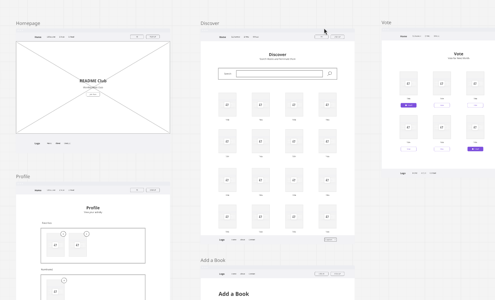

README Club
Concevoir une expérience de lecture collaborative qui aide les clubs de lecture à découvrir, décider, lire et discuter ensemble.

Aperçu du Projet
Le Défi
Les clubs de lecture créent des liens sociaux significatifs, mais de nombreux groupes s’appuient encore sur des outils déconnectés :
- Discord pour les discussions
- Google Forms pour les votes
- Tableurs pour le suivi
- Goodreads pour la découverte
Ces outils résolvent des problèmes individuels, mais ne soutiennent pas le parcours complet d’un club de lecture. Les membres doivent souvent recréer manuellement une expérience qui devrait se sentir connectée :
Comment créer une seule plateforme qui aide les lecteurs à participer à un club de lecture tout en respectant leurs habitudes et horaires de lecture différents ?
La Solution
README Club est une plateforme de lecture communautaire conçue pour centraliser l’expérience complète d’un club de lecture. La plateforme permet aux membres de découvrir et suggérer des livres, voter collectivement, suivre leur progression de lecture, participer à des discussions sans risque de spoilers, et partager avis et réflexions.
L’objectif n’était pas de remplacer les plateformes de lecture individuelles, mais de créer la couche collaborative manquante entre elles.
Processus de Design
Le projet a suivi une approche de conception centrée sur l’utilisateur :
Comprendre le Problème
Avant de mener des recherches, j’ai identifié des hypothèses à valider.
La sélection des livres est souvent contrôlée par un petit nombre de membres.
Impact potentiel : Certains membres peuvent se sentir déconnectés des décisions du groupe.
La responsabilité sociale peut influencer la motivation à lire.
Impact potentiel : Les lecteurs sont plus susceptibles de terminer les livres lorsqu’ils partagent l’expérience avec d’autres.
Les outils de discussion existants ne s’adaptent pas aux différentes vitesses de lecture.
Impact potentiel : Les lecteurs peuvent éviter les conversations à cause des spoilers ou parce qu’ils se sentent en retard.
Analyse Concurrentielle
L’objectif était de comprendre comment les produits existants soutiennent la découverte de livres, le suivi de lecture, les interactions communautaires, les discussions et l’organisation de groupe.

Comparaison de cinq plateformes selon cinq dimensions
Résultat 1 — Les plateformes existantes résolvent des problèmes individuels
Goodreads et StoryGraph sont efficaces pour découvrir et suivre des livres. Cependant, les activités collaboratives telles que choisir des livres, suivre la progression du groupe et organiser des discussions se déroulent généralement ailleurs.
Résultat 2 — Les clubs de lecture dépendent fortement de l’organisation manuelle
Les membres combinent plusieurs outils pour recréer une seule expérience.
Opportunité : Créer un flux de travail dédié où l’intégralité du parcours du club de lecture existe en un seul endroit.
Recherche Utilisateur
5 entretiens semi-directifs ont été conduits à distance, de 20 minutes chacun. Les participants ont été encouragés à décrire des expériences réelles plutôt que des opinions hypothétiques.
Critères de recrutement
- Lit au moins 5 livres par an
- A participé à un club de lecture ou une communauté de lecture
- A utilisé au moins une plateforme liée à la lecture
| ID | Profil | Comportement |
|---|---|---|
| P1 | Membre d’un club de lecture mensuel | Lit 15 livres/an |
| P2 | Membre d’un club de lecture de bibliothèque | Lit 20 livres/an |
| P3 | Lecteur solo fréquent | Lit 30 livres/an |
| P4 | Utilisateur Goodreads | Lit 15 livres/an |
| P5 | Lecteur occasionnel | Lit 5 livres/an |

Quatre grands thèmes ont émergé de l’analyse : la sélection des livres, la motivation à lire, l’anxiété des spoilers et les outils fragmentés.
Insights de Recherche
Les lecteurs veulent de l’influence sans responsabilités supplémentaires
3/5 participants ont décrit la sélection des livres comme contrôlée par les organisateurs.
« En général, une seule personne suggère les livres car quelqu’un doit tout organiser. »
« J’influence rarement ce que le groupe lit. »
Opportunité de conception : Créer une participation légère via des nominations et des votes.
La motivation vient de la connexion sociale
3/5 participants ont mentionné que les réunions ou discussions les aidaient à terminer les livres.
« Savoir qu’une réunion approche m’aide à finir. »
Opportunité de conception : Créer une visibilité de la progression sans pression.
Les lecteurs ont besoin de discussions sans spoilers
4/5 participants ont mentionné éviter les discussions lorsqu’ils étaient en retard.
« Quelqu’un a mentionné la fin sans réaliser que j’étais en retard. »
Opportunité de conception : Adapter les discussions en fonction de la progression de lecture.
L’expérience est fragmentée
5/5 participants utilisaient plusieurs plateformes.
« Discord fonctionne, mais les conversations deviennent désordonnées. »
Opportunité de conception : Créer un environnement de lecture connecté.
Personas Basées sur la Recherche
Les personas ont été créées en combinant des schémas observés lors des entretiens plutôt qu’en représentant des participants individuels.
« Quelqu’un doit tout organiser. »
Objectifs
- Maintenir le club actif
- Réduire l’effort administratif
Points de friction
- Tout organiser seule
- Faible participation
Besoins
- Structure
- Automatisation
- Responsabilité partagée
« Je ne veux pas une obligation de plus. »
Objectifs
- Participer sans pression
Points de friction
- Se sentir exclue
- Difficulté à suivre le rythme
Besoins
- Flexibilité
- Suivi de progression simple
« Je veux que mes recommandations comptent. »
Objectifs
- Influencer les choix du groupe
Points de friction
- Contribution limitée aux décisions
Besoins
- Découverte
- Reconnaissance
- Contribution
Idéation & Exploration du Design
Défi 1 — Comment les membres peuvent-ils contribuer sans alourdir l’organisation ?
Sélection par l’admin
Rejeté
Crée un public passif.
Sélection aléatoire
Rejeté
Retire l’appropriation communautaire.
Nomination collaborative
Sélectionné
Permet la participation tout en simplifiant l’organisation.
Défi 2 — Comment les discussions peuvent-elles rester inclusives ?
Chat de groupe unique
Rejeté
Crée des risques de spoilers.
Canaux séparés
Rejeté
Crée une complexité inutile.
Discussions par progression
Sélectionné
Équilibre sécurité et participation.
Architecture de l’Information
Avant de concevoir les écrans individuels, j’ai cartographié la structure du produit pour m’assurer que l’expérience suivait un parcours de lecture clair.
 Figjam ↗
Figjam ↗

Tableau Miro ↗
Décisions Clés de Design
Vote Collaboratif
Problème : Les membres se sentaient déconnectés de la sélection des livres.
Solution : Les membres nominent des livres et votent ensemble.
Impact : Crée une appropriation partagée du processus de sélection.

Progression de Lecture
Problème : Les lecteurs progressent différemment.
Solution : Statuts simples — À lire · En cours · Terminé.
Impact : Crée une visibilité sans pression.

Protection contre les Spoilers
Problème : Les lecteurs évitent les discussions lorsqu’ils sont en retard.
Solution : L’accès aux discussions s’adapte à la progression de lecture.
Compromis : Moins de conversations immédiates, mais une expérience plus sûre.
Tests d’Utilisabilité
5 nouveaux participants (différents de la phase de recherche) ont été invités à compléter trois tâches principales pour valider la compréhension des flux, la clarté des actions et l’utilité des fonctionnalités.
| Tâche | Taux de succès |
|---|---|
| Nommer un livre | 4 / 5 |
| Voter pour un livre | 3 / 5 |
| Rejoindre une discussion | 3 / 5 |
Tâche 1 — Nommer un Livre
Problème : Les utilisateurs confondaient « Enregistrer » avec « Nommer ».
Itération : L’étiquette du CTA a été changée de Enregistrer à Nommer pour le Club et un retour de confirmation a été ajouté.
Tâche 2 — Voter pour un Livre
Problème : Les règles de vote n’étaient pas claires.
Itération : Ajout du nombre de votes restants, des informations sur la date limite et des instructions intégrées.
Tâche 3 — Rejoindre une Discussion
Problème : Les utilisateurs comprenaient les restrictions mais voulaient plus d’explications.
Itération : Ajout d’un message contextuel : « Terminez le livre pour rejoindre la conversation et éviter les spoilers. »
Impact des Itérations
Après les itérations, les utilisateurs ont compris le but de chaque flux plus rapidement, les règles de vote sont devenues plus claires et la protection contre les spoilers a nécessité moins d’explications.
De petits changements dans la formulation et la visibilité ont significativement amélioré l’utilisabilité. Le prototype final a mieux soutenu l’objectif initial : créer une expérience de lecture collaborative sans ajouter de complexité organisationnelle.
Considérations d’Accessibilité
Couleurs
Palette sémantique avec contraste suffisant, états dédiés et prise en charge des thèmes clair et sombre.
Typographie
Police Quando pour les titres, Lato pour les textes, avec une hiérarchie visuelle cohérente.
Interactions
États de survol, focus, sélection, désactivation, vote et progression clairement identifiables.
Responsive
Approche mobile-first avec des mises en page adaptatives sur mobile, tablette et desktop.
Considérations Techniques
Ce projet ayant été développé comme un prototype fonctionnel, les contraintes techniques ont influencé les décisions de design. L’objectif n’était pas seulement de concevoir une expérience idéale, mais aussi de valider si cette expérience pouvait être réalistement implémentée.
Collaboration en Temps Réel
Firebase a pris en charge l’authentification, les données utilisateur et les mises à jour en temps réel — permettant aux fonctionnalités collaboratives de se comporter de manière plus proche d’un vrai produit.
Données des Livres
Les API de livres ont introduit des défis liés à la disponibilité des métadonnées, aux incohérences des catégories et aux différents formats de données. Ces limitations ont influencé la façon dont les informations sur les livres étaient affichées et filtrées.
Architecture Frontend
Implémenté avec React, TypeScript et Tailwind CSS. Une approche basée sur les composants a permis une itération plus rapide entre le design et l’implémentation, soutenant la validation UX sans que cela devienne le centre de l’expérience produit.
Réflexion
README Club m’a appris que concevoir des produits communautaires ne consiste pas simplement à ajouter des fonctionnalités sociales. Le défi était d’équilibrer : autonomie vs responsabilité, motivation vs pression, et ouverture vs protection contre les spoilers.
Ce projet a renforcé ma capacité à transformer la recherche en insights, les insights en décisions de design, et les décisions de design en une expérience produit validée.